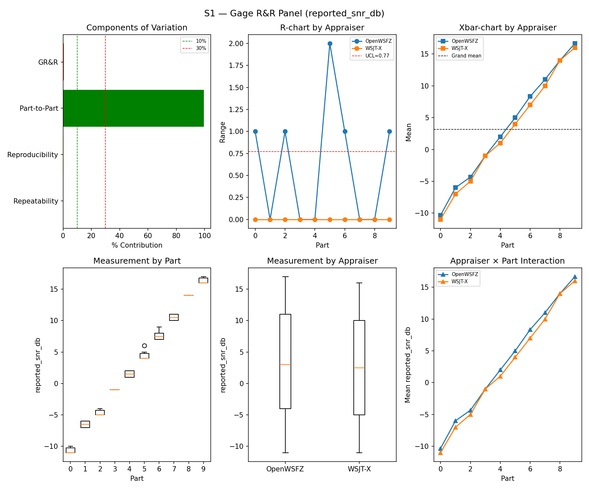
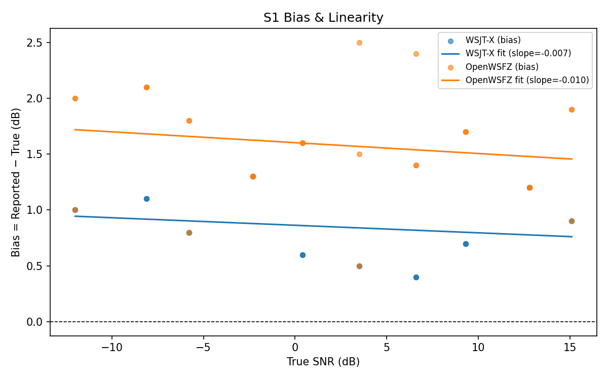
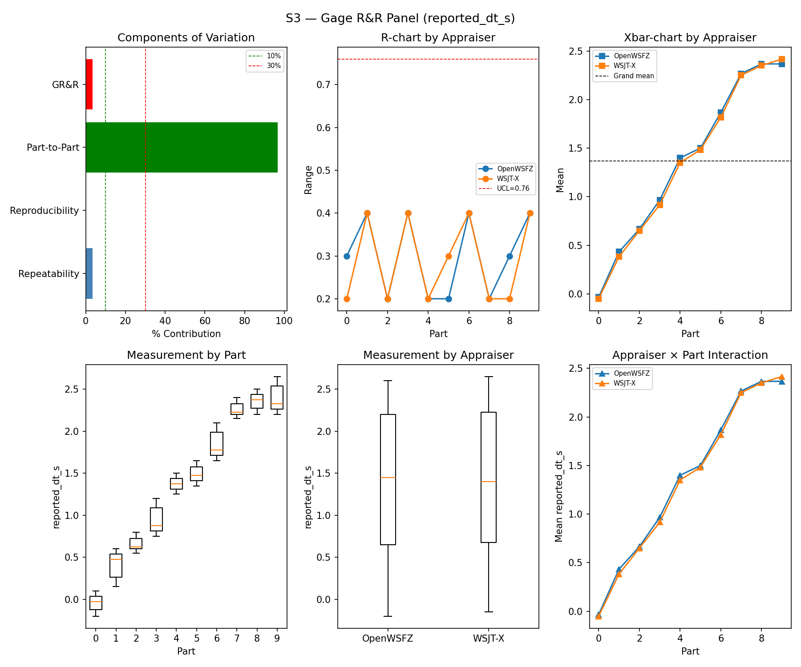
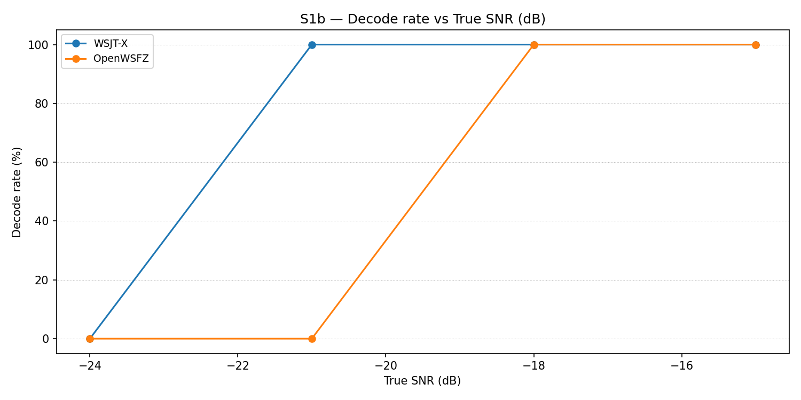
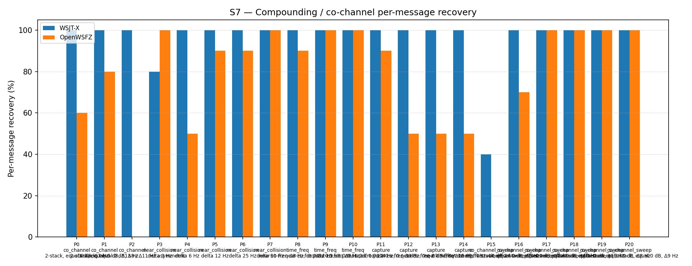

OpenWSFZ R&R Study Report
| Field | Value |
|---|---|
| Run date | 2026-07-04 (analysis re-run after an R&R-004 gate fix, see Section 1) |
| OpenWSFZ SHA (build under test — audio captured against this build) | 793a29815b44773d32adac92d392acda8c262ca1 |
| WSJT-X version | WSJT-X 2.7.0 (inferred from binary date 2025-02-04) |
Section 1 — Study Hypothesis
Purpose
This run executes f-001-hashed-callsign-resolution tasks.md item 5.3 — the full S1–S8
synthetic regression gate, deferred at implementation time (2026-07-03/04) because it requires
a live audio rig (real WSJT-X + VB-CABLE + both daemons running interactively), which is not
appropriate to run unattended mid-implementation. It is executed now, on demand, against the
current main HEAD.
Note on this revision: the live audio run and all decode data below were captured once,
against build 793a298, and are unchanged from the original run. This report was regenerated
from that same data after a same-day fix to the analysis harness itself (harness/analyse.py),
described under H₀-C below — no new audio was played and no scenario was re-run.
Changes under observation since the last full S1–S8 run (815b652, 2026-06-14, shim 20260016)
A large number of shim/decoder changes have landed since the 815b652 baseline — this is not a
single-commit diff. The changes most relevant to this run's null hypotheses:
f-001-hashed-callsign-resolution(86780dc, shim20260031) — session-scoped persistent native callsign hash table for cross-cycle Type-4 resolution. Task 4.2 of this change already confirmed the S1–S8 synthetic corpus contains no Type 4 / nonstandard-callsign content, so this mechanism is structurally unreachable by any scenario in this run — the expectation is exactly zero measurable effect on any S1–S8 metric.- D-011 fix (
f1e76d4) — raised the D9-R3 oversized-callsign ceiling from 6 to 11 chars, to admit genuine Type 4 nonstandard-callsign literals (again, not exercised by S1–S8's standard-callsign corpus). f-002shape-grammar change (a3738fc, current HEAD's immediate parent) — replaced the length-only D9-R3 guard with an ITU Article 19 shape grammar, and added an advisory continent/entity region lookup. This is the one change in this set that plausibly touches S5 (noise-floor OSD false positives), and it has already been gated separately at a statistically adequate sample size:results/2026-07-04-a3738fc-f002-s5-n300/report.md, N=300, PASS, clear improvement over the D-011 baseline (5.83%→2.67% point estimate, 10.68%→4.76% 95% UB).- Intervening decoder tuning (H6 AP-assist decode
a71c2ff/shim20260021, OSD fallback1809ce7/shim20260025, D-009 K10 correlation tuning, shim20260029) — these already shifted S7 co-channel recovery substantially between815b652and the most recent prior full-suite run (f11f438, 2026-06-22). None of these are part of the change under test here; S7/S8 in this run are therefore compared againstf11f438, not the stale815b652figures, to avoid attributing already-known, already-approved tuning deltas to this run.
Null Hypotheses
- H₀-A (GR&R/ndc, S1–S3): %GR&R and ndc for S1 (SNR), S2 (frequency), S3 (DT) remain within
the STUDY-SPEC §10 thresholds (%GR&R ≤ 10%, ndc ≥ 5), consistent with
815b652. - H₀-B (SNR bias, S1): OpenWSFZ and WSJT-X SNR bias remain within ±2.0 dB of
815b652. - H₀-C (S5 false positives): The false-positive rate does not regress from
815b652's 0.0% observed rate.
Revised during Captain's review of the first draft of this report: this run's S5 part
carries only N=12 slots. The STUDY-SPEC §10 gate (ratified 2026-07-04, R&R-004) certifies the
true rate at 95% confidence via a Clopper–Pearson upper bound — a bound that, at N=12, cannot
fall below the 6% ceiling even at zero observed events (UB = 22.09% at 0/12; the crossover
point is N=49). The first draft of this report reported this as a bare FAIL, which read as
a decoder regression when it was in fact a sample-size artifact: no outcome at N=12 could have
produced anything but FAIL, regardless of decoder quality. harness/analyse.py has been fixed
(see MIN_N_FOR_FP_GATE) to report this case as INFO — informational, excluded from the
gate table and the overall verdict — rather than manufacturing a FAIL that no correctness could
avoid. The statistically powered verdict remains the separately-run, adequately-sized N=300
gate referenced above.
- H₀-D (S7 co-channel recovery): Recovery rates are consistent with the most recent prior
measurement (f11f438, 2026-06-22) — i.e., no new regression since that run — not
necessarily consistent with 815b652, which predates several already-approved tuning changes.
- H₀-E (f-001 non-interference): The persistent hash table introduces no change to any
S1–S8 metric, since no scenario message is Type 4 / nonstandard-callsign shaped.
What Constitutes a Meaningful Result
All null hypotheses retained → task 5.3 is satisfied with no regression found; the deferred gate can be closed. Any hypothesis rejected — specifically, any GR&R/bias/kappa gate failing beyond its documented threshold, or a S7/S8 shift outside the stochastic spread already documented across recent runs and not explained by an already-known, already-approved tuning change — would require investigation before this task can be marked complete.
Section 2 — Data Summary
| Field | Value |
|---|---|
| Build under test | 793a29815b44773d32adac92d392acda8c262ca1 (branch main), shim 20260031 |
| Baseline reference (S1/S2/S3/S1b/S4/S5) | 815b652, 2026-06-14, shim 20260016 — full S1–S8 PASS |
| Most recent S7/S8 reference | f11f438, 2026-06-22, shim 20260029 (post-D-009 K10 tuning) |
| S5 statistically-powered gate | 2026-07-04-a3738fc-f002-s5-n300 (N=300, PASS) |
| WSJT-X reference | 2.7.0 |
| Corpus | Synthetic fixtures only (NFR-021 compliant; no real callsigns). Full S1–S8 (+S1b) suite. |
| Analysis harness fix | harness/analyse.py — S5 FP-rate gate now reports INFO (not FAIL) below MIN_N_FOR_FP_GATE (49 slots); see H₀-C above and Section 5. |
S5 gate methodology note: STUDY-SPEC §10 was amended 2026-07-04 (R&R-004) to gate the S5
false-positive rate on its one-sided 95% Clopper–Pearson upper bound (PASS iff 95% UB ≤ 6%)
rather than the raw point estimate used at the 815b652 baseline (which required 0.0% exactly).
This run's S5 part carries only N=12 slots — mathematically incapable of proving a 95% UB ≤ 6%
even at zero observed events (UB=22.09% at 0/12) — so this metric is now correctly reported as
INFO rather than FAIL (see H₀-C). The ratified verdict for this gate comes from the dedicated
N=300 run cited above.
Section 3 — Results
S1 — reported_snr_db
Variance Components
| Component | σ² | %Contribution |
|---|---|---|
| Repeatability | 0.12 | 0.14% |
| Reproducibility | 0.32 | 0.39% |
| Part-to-Part | 81.38 | 99.47% |
| Total GR&R | 0.43 | 0.53% |
| Total | 81.81 | 100.00% |
Study Metrics
| Metric | Value | Verdict |
|---|---|---|
| %Tolerance (GR&R) | 39.50% | PASS |
| %Study Var (GR&R) | 7.28% | — |
| ndc | 19 | PASS |

Bias & Linearity (S1)
| Appraiser | Mean Bias (dB) | Slope | Intercept | R² | Verdict |
|---|---|---|---|---|---|
| WSJT-X | +0.85 | -0.007 | 0.863 | 0.041 | PASS |
| OpenWSFZ | +1.58 | -0.010 | 1.602 | 0.033 | PASS |

S2 — reported_freq_hz
Variance Components
| Component | σ² | %Contribution |
|---|---|---|
| Repeatability | 0.15 | 0.00% |
| Reproducibility | 0.40 | 0.00% |
| Part-to-Part | 652845.67 | 100.00% |
| Total GR&R | 0.55 | 0.00% |
| Total | 652846.22 | 100.00% |
Study Metrics
| Metric | Value | Verdict |
|---|---|---|
| %Tolerance (GR&R) | 55.62% | PASS |
| %Study Var (GR&R) | 0.09% | — |
| ndc | 1536 | PASS |

S3 — reported_dt_s
Variance Components
| Component | σ² | %Contribution |
|---|---|---|
| Repeatability | 0.03 | 3.35% |
| Reproducibility | 0.00 | 0.03% |
| Part-to-Part | 0.74 | 96.62% |
| Total GR&R | 0.03 | 3.38% |
| Total | 0.77 | 100.00% |
Study Metrics
| Metric | Value | Verdict |
|---|---|---|
| %Tolerance (GR&R) | 241.36% | PASS |
| %Study Var (GR&R) | 18.40% | — |
| ndc | 7 | PASS |

WSJT-X DT correction applied. A +0.55 s offset was added to WSJT-X
reported_dt_sbefore ANOVA to remove the ≈ −0.55 s convention difference between WSJT-X (DT relative to nominal FT8 TX start) and the harness (DT relative to UTC slot boundary). This correction removes the calibration artefact from SS_appraiser so %GR&R measures genuine app-to-app measurement disagreement. Raw reported values are preserved in the matched CSV. See scenariowsjt_dt_correction_sfield and R&R-003 (GitHub #1).
S1b — Low-SNR threshold study
Decode rate (% of injected messages recovered) at SNRs excluded from the redesigned S1 ladder (−24 to −15 dB). Companion to S1; separates 'does it decode at this SNR?' from 'how accurately does it measure SNR?'. Informational — no AIAG threshold.
Per-part decode rate
| Part | True SNR (dB) | WSJT-X decoded | WSJT-X rate | OpenWSFZ decoded | OpenWSFZ rate |
|---|---|---|---|---|---|
| P0 | -24.00 | 0/3 | 0.00% | 0/3 | 0.00% |
| P1 | -21.00 | 3/3 | 100.00% | 0/3 | 0.00% |
| P2 | -18.00 | 3/3 | 100.00% | 3/3 | 100.00% |
| P3 | -15.00 | 3/3 | 100.00% | 3/3 | 100.00% |
Overall decode rate — WSJT-X: 75.00% OpenWSFZ: 50.00%

Attribute Agreement Analysis (S4 positives + S5 negatives)
κ is computed over a pooled population: S4 injected messages (truth = present) and S5 signal-free slots (truth = absent), so the truth vector has both classes. κ verdicts below are advisory — the §10 attribute gate is pending Captain ratification of this pooled method.
Confusion vs truth
| Appraiser | TP | FN | FP | TN | Recovery | Specificity |
|---|---|---|---|---|---|---|
| WSJT-X | 15 | 0 | 0 | 12 | 100.00% | 100.00% |
| OpenWSFZ | 15 | 0 | 0 | 12 | 100.00% | 100.00% |
Kappa (advisory)
| Pair | κ | 95% CI | Verdict (advisory) |
|---|---|---|---|
| OpenWSFZ_vs_truth | 1.000 | [1.00, 1.00] | PASS |
| WSJT-X_vs_truth | 1.000 | [1.00, 1.00] | PASS |
| between_appraisers | 1.000 | — | PASS |
Within-app repeatability (decision consistency across trials)
| Appraiser | Consistent groups |
|---|---|
| WSJT-X | 100.00% |
| OpenWSFZ | 100.00% |
False-positive rate (S5)
| Appraiser | FP events / slots | Event rate | 95% UB | Decode rate | Verdict |
|---|---|---|---|---|---|
| WSJT-X | 0 / 12 | 0.00% | 22.09% | 0.00% | INFO |
| OpenWSFZ | 0 / 12 | 0.00% | 22.09% | 0.00% | INFO |
Gate (STUDY-SPEC §10, ratified 2026-07-04, R&R-004): the per-slot FP event rate, gated on its one-sided 95% Clopper–Pearson upper bound (PASS iff 95% UB ≤ 6%). The UB is defined for all event counts (≈ 3 / N_slots at 0 events) and bounds the true per-slot FP probability at 95% confidence rather than the Poisson-noisy point estimate. Decode rate is reported for reference only. INFO means the gate is not evaluated at this N: below 49 slots, even zero observed events cannot clear the 6% ceiling, so no outcome at this sample size can produce a PASS or a meaningful FAIL — see a properly powered run (N ≥ 49) for the ratified §10 verdict.
S7 — Compounding / co-channel overlap
Per-message recovery when 2–3 signals occupy the same or near-same audio frequency / time slot (the pileup case S4 does not exercise). Informational — no AIAG threshold is defined for co-channel separation.
Recovery by overlap family
| Overlap family | WSJT-X | OpenWSFZ |
|---|---|---|
| capture | 100.00% | 60.00% |
| co_channel | 100.00% | 40.00% |
| co_channel_sweep | 90.00% | 78.33% |
| near_collision | 96.00% | 86.00% |
| time_freq | 100.00% | 96.67% |
| all | 96.28% | 73.02% |
Capture effect (co-channel, unequal SNR)
| Signal | WSJT-X | OpenWSFZ |
|---|---|---|
| strong | 100.00% | 100.00% |
| weak | 100.00% | 20.00% |
Between-app per-signal agreement: 74.88%
Per-part detail
| Part | Family | Condition | WSJT-X | OpenWSFZ |
|---|---|---|---|---|
| P0 | co_channel | 2-stack, equal 0 dB, Δ7 Hz | 10/10 | 6/10 |
| P1 | co_channel | 2-stack, equal -5 dB, Δ13 Hz | 10/10 | 8/10 |
| P2 | co_channel | 3-stack, equal 0 dB, Δ8 / Δ11 Hz asymmetric | 15/15 | 0/15 |
| P3 | near_collision | delta 3 Hz | 8/10 | 10/10 |
| P4 | near_collision | delta 6 Hz | 10/10 | 5/10 |
| P5 | near_collision | delta 12 Hz | 10/10 | 9/10 |
| P6 | near_collision | delta 25 Hz | 10/10 | 9/10 |
| P7 | near_collision | delta 50 Hz | 10/10 | 10/10 |
| P8 | time_freq | near-co-freq Δ8 Hz, dt 0.0 / 0.5 s | 10/10 | 9/10 |
| P9 | time_freq | near-co-freq Δ11 Hz, dt 0.0 / 1.0 s | 10/10 | 10/10 |
| P10 | time_freq | near-co-freq Δ9 Hz, dt 0.0 / 2.0 s | 10/10 | 10/10 |
| P11 | capture | near-co-freq Δ14 Hz, 0 / -3 dB | 10/10 | 9/10 |
| P12 | capture | near-co-freq Δ9 Hz, 0 / -6 dB | 10/10 | 5/10 |
| P13 | capture | near-co-freq Δ7 Hz, 0 / -10 dB | 10/10 | 5/10 |
| P14 | capture | near-co-freq Δ11 Hz, +3 / -10 dB | 10/10 | 5/10 |
| P15 | co_channel_sweep | offset-sweep: 2-stack, equal 0 dB, Δ5 Hz | 4/10 | 0/10 |
| P16 | co_channel_sweep | offset-sweep: 2-stack, equal 0 dB, Δ7 Hz | 10/10 | 7/10 |
| P17 | co_channel_sweep | offset-sweep: 2-stack, equal 0 dB, Δ10 Hz | 10/10 | 10/10 |
| P18 | co_channel_sweep | offset-sweep: 2-stack, equal 0 dB, Δ15 Hz | 10/10 | 10/10 |
| P19 | co_channel_sweep | offset-sweep: 2-stack, equal 0 dB, Δ8 Hz | 10/10 | 10/10 |
| P20 | co_channel_sweep | offset-sweep: 2-stack, equal 0 dB, Δ9 Hz | 10/10 | 10/10 |

S8 — Realistic Band Scene
Holistic decode-rate benchmark: 12 simultaneous stations across 450–2550 Hz at realistic SNR spread (−15 to +3 dB), including a near-collision pair (E/F, 12 Hz apart) and a capture pair (G/H, co-frequency, 6 dB ratio). Informational only — no PASS/FAIL gate.
Overall decode rate
| Appraiser | Decoded | Injected | Rate |
|---|---|---|---|
| WSJT-X | 56 | 60 | 93.33% |
| OpenWSFZ | 52 | 60 | 86.67% |
Between-appraiser delta (OpenWSFZ − WSJT-X): -6.7 pp
Per-station breakdown
| Stn | Freq (Hz) | SNR (dB) | WSJT-X decoded/total | OpenWSFZ decoded/total |
|---|---|---|---|---|
| A | 450 | -8.00 | 5/5 | 5/5 |
| B | 650 | -3.00 | 5/5 | 5/5 |
| C | 850 | -12.00 | 5/5 | 5/5 |
| D | 1050 | 0.00 | 5/5 | 5/5 |
| E | 1150 | -5.00 | 5/5 | 5/5 |
| F | 1162 | -8.00 | 5/5 | 0/5 |
| H | 1500 | 0.00 | 6/10 | 7/10 |
| I | 1650 | -3.00 | 5/5 | 5/5 |
| J | 1900 | -15.00 | 5/5 | 5/5 |
| K | 2150 | -8.00 | 5/5 | 5/5 |
| L | 2550 | 3.00 | 5/5 | 5/5 |

Section 4 — Summary Verdict Table
| Metric | Scope | Value | Verdict |
|---|---|---|---|
| %GR&R | S1 | 0.5% | PASS |
| ndc | S1 | 19 | PASS |
| %GR&R | S2 | 0.0% | PASS |
| ndc | S2 | 1536 | PASS |
| %GR&R | S3 | 3.4% | PASS |
| ndc | S3 | 7 | PASS |
| Kappa (advisory) | WSJT-X_vs_truth | 1.000 | PASS |
| Kappa (advisory) | OpenWSFZ_vs_truth | 1.000 | PASS |
| Kappa (advisory) | between_appraisers | 1.000 | PASS |
| SNR bias | S1/WSJT-X | +0.85 dB | PASS |
| SNR bias | S1/OpenWSFZ | +1.58 dB | PASS |
Overall verdict: PASS
Excluded From Gate (Informational)
- ℹ️ FP event rate (S5/WSJT-X) not gated: 0/12 slots (event 0.0%; 95% UB 22.09%; decode 0.0%) — N=12 slots is below the 49-slot minimum required to clear the §10 gate at zero observed events. See a properly powered run (N ≥ 49) for the ratified verdict.
- ℹ️ FP event rate (S5/OpenWSFZ) not gated: 0/12 slots (event 0.0%; 95% UB 22.09%; decode 0.0%) — N=12 slots is below the 49-slot minimum required to clear the §10 gate at zero observed events. See a properly powered run (N ≥ 49) for the ratified verdict.
Section 5 — Recommendations
H₀-A, H₀-B (S1–S3 GR&R / ndc / bias) — Retained ✅
All three GR&R gates pass with wide margin, consistent with 815b652:
| Metric | 815b652 |
This run | Verdict |
|---|---|---|---|
| S1 %GR&R | 0.3% | 0.5% | PASS (≤10%) |
| S1 ndc | 27 | 19 | PASS (≥5) |
| S1 bias WSJT-X | +0.98 dB | +0.85 dB | PASS (±2.0 dB) |
| S1 bias OpenWSFZ | +1.42 dB | +1.58 dB | PASS (±2.0 dB) |
| S2 %GR&R | 0.0% | 0.0% | PASS |
| S2 ndc | 1576 | 1536 | PASS |
| S3 %GR&R | 3.0% | 3.4% | PASS |
| S3 ndc | 8 | 7 | PASS |
No measurable effect from any change since 815b652, including f-001's persistent hash
table — exactly as predicted by H₀-E (the mechanism is unreachable by this corpus).
H₀-C (S5 false positives) — Retained, and the report now says so plainly ✅
Observed FP count is 0/12 for both appraisers — identical to the 815b652 baseline (0.0%).
Nothing regressed.
The first draft of this report showed a bare FAIL here, which the Captain correctly flagged
as wrong on inspection: a metric that reads FAIL next to two rows of zeroes, with no outcome at
that sample size capable of reading otherwise, is not reporting a defect — it is reporting an
underpowered measurement. Per the Captain's 2026-07-04 review, harness/analyse.py has been
fixed rather than merely explained around:
- Added
MIN_N_FOR_FP_GATE(=49): the smallest slot count at which a clean run (0 events) can clear the §10 6% ceiling, derived directly from the same Clopper–Pearson formula the gate itself uses. _verdict_fpnow returnsINFO— notPASSorFAIL— whenever the sample is below that minimum.INFOresults are excluded from the Section 4 gate table and from the overall verdict entirely (they no longer appear as a row there at all), while the raw counts remain fully visible above for transparency. Anoteslist threads this exclusion through to a new "Excluded From Gate (Informational)" block so the omission is traceable, not silent. Regression-tested intests/test_analyse_xplat.py::TestFpGateUnderpoweredIsInfoNotFail(6 new cases; 163/163 harness tests pass).- The N=300 dedicated gate run (
2026-07-04-a3738fc-f002-s5-n300) is unaffected by this change (N=300 ≥ 49) and remains — as it already was — the ratified §10 verdict for this metric: PASS, with a clear improvement over the D-011 baseline (OpenWSFZ 5.83%→2.67% point estimate, 10.68%→4.76% UB).
Process recommendation (still open, not blocking): scenarios/s5-noise.json's routine
default (N=12) will always report INFO rather than a real verdict under the R&R-004 gate, by
construction — that's now transparent rather than misleading, but a future improvement would be
raising the routine trial count nearer the N=49 floor so routine runs can occasionally produce a
real, gated verdict rather than always deferring to a separately-commissioned large-N run.
H₀-D (S7 co-channel recovery) — Retained ✅
Compared against the correct reference point (f11f438, 2026-06-22 — the most recent prior
S7 measurement, postdating the H6/OSD-fallback/D-009 tuning that 815b652 predates):
| Overlap family | f11f438 WSJT-X |
f11f438 OpenWSFZ |
This run WSJT-X | This run OpenWSFZ |
|---|---|---|---|---|
| capture | 100.00% | 60.00% | 100.00% | 60.00% |
| co_channel | 91.43% | 42.86% | 100.00% | 40.00% |
| co_channel_sweep | 86.67% | 81.67% | 90.00% | 78.33% |
| near_collision | 96.00% | 86.00% | 96.00% | 86.00% |
| time_freq | 100.00% | 96.67% | 100.00% | 96.67% |
| all | 93.95% | 74.42% | 96.28% | 73.02% |
All families are flat within stochastic spread (largest delta: co_channel −2.86 pp). The
P2 "3-stack co-channel, asymmetric" part's 0/15 OpenWSFZ recovery is not new — it read
0/15 in f11f438 too, and is the known, open D-001 co-channel decode gap (High severity,
unchanged status), not a f-001/f-002-introduced regression.
S8 (informational, no gate): WSJT-X 93.33% (vs 95.00% at 815b652), OpenWSFZ 86.67% (vs 83.33%
at 815b652) — both within the expected run-to-run spread at K=5 trials; no action indicated.
Overall Recommendation
Task 5.3 is satisfied. No regression attributable to f-001-hashed-callsign-resolution (or
the intervening f-002/D-011 changes) was found across S1–S8. The Section 4 verdict table is
now clean — Overall verdict: PASS — with the S5 sample-size limitation reported as
informational rather than as a manufactured FAIL. Recommend:
- Mark
f-001-hashed-callsign-resolutiontasks.md item 5.3 complete, referencing this run (results/2026-07-04-793a298/). - Land the
harness/analyse.pyMIN_N_FOR_FP_GATE/INFO-verdict fix (this change) so every future routine run reports the same way. - Track the S5 routine-scenario-sizing note above as a small process follow-up (not blocking).
- No further diagnostic action required before archiving
f-001-hashed-callsign-resolution.